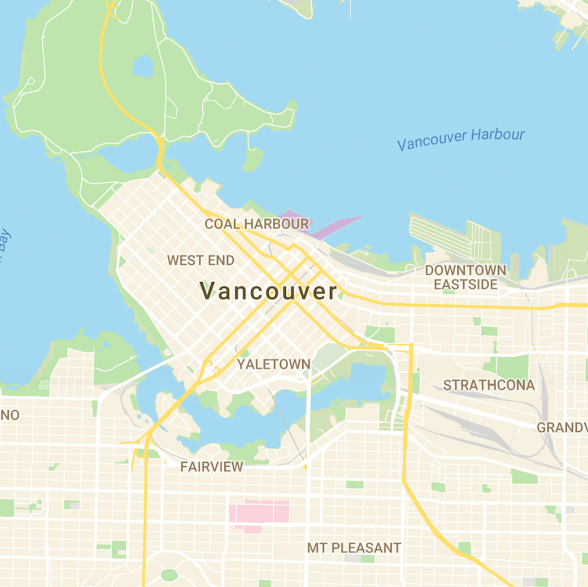

Projects
Connect Fort
Vancouver's Largest Public Blanket Fort! A public space experiment designed to activate the space under the Cambie Bridge.
All Weather YVR
How do you get around in the rain? That's what we wanted to find out in this educational intervention intervention.
Open Jams
How can amateur musician's in Vancouver create more music and enhance public spaces? We propose that with a mobile application musician's could be more empowered to jam together.